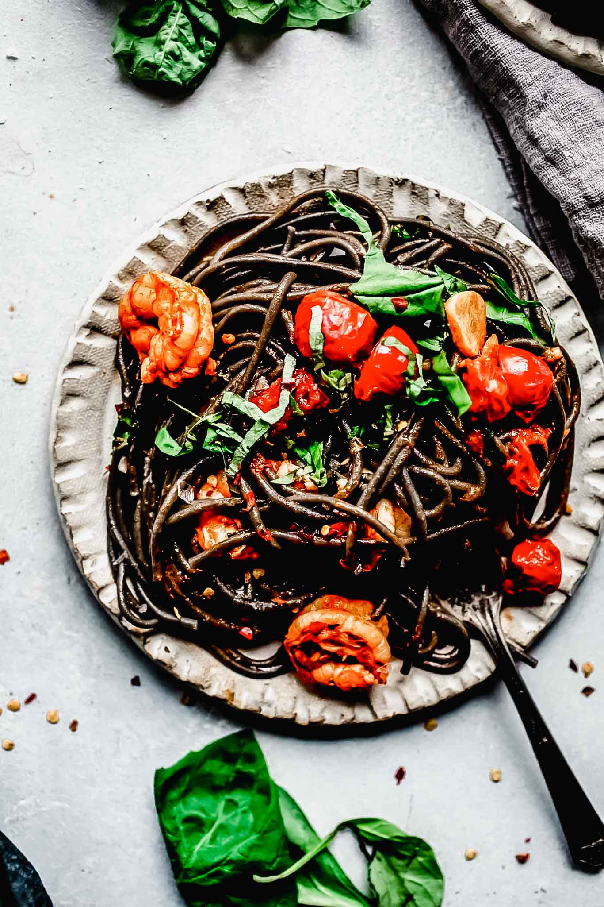

Squid Ink Spagetti

Description
A pasta dish that will make you say "OH MY GOD"!
Ingredients
- 12 ounces squid ink pasta
- 1 pound shrimp
- 1 Tablespoon extra virgin olive oil
- 6 cloves garlic
- 2 Tablespoons tomato paste
- 10 ounces cherry tomatoes (halved)
- 1/3 cup white wine
- 1/2 teaspoon red pepper flakes
- 2 lemons (zested and juiced)
- 1/2 cup chopped basil
- 4 Tablespoons butter
- Salt
- Ground black pepper
Steps
- Bring a large pot of salted water to a boil.
- In a large skillet heat olive oil on medium-high heat until hot. Add the garlic. Cook, stirring occasionally, 1-2 minutes, or until lightly browned and fragrant. Add the tomato paste. Cook, stirring frequently, 30 seconds to 1 minute, or until dark red. Add the cherry tomatoes, white wine, ¼ cup water and red pepper flakes; season with salt and pepper. Cook, stirring occasionally, 3 to 5 minutes, or until tomatoes are softened.
- Cook the pasta to al dente, reserving ½ cup of the pasta cooking water, drain the pasta.
- While the pasta cooks, add the shrimp to tomatoes; season with salt and pepper. Cook, stirring occasionally, 2 to 3 minutes, or until cooked.
- Add the cooked pasta, butter, lemon zest, lemon juice and half the reserved pasta cooking water to the skillet with the shrimp & tomatoes. Cook, stirring frequently, 2-3 minutes, or until the pasta is coated in the sauce; season with salt and pepper to taste. (If the sauce seems dry, add in some of the reserved pasta cooking water to achieve your desired consistency.) Turn off the heat and stir in half the basil.
- Garnish with remaining basil and serve.
Home